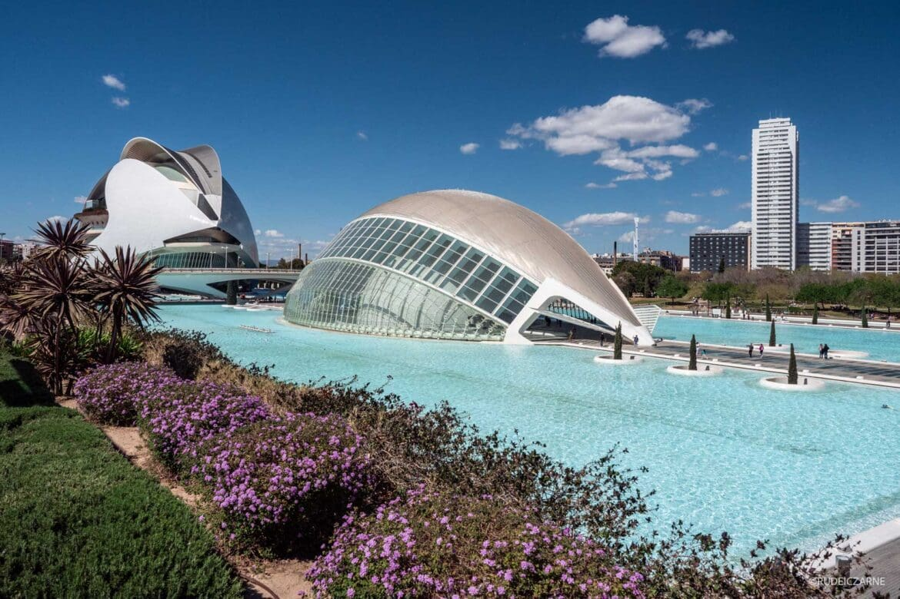
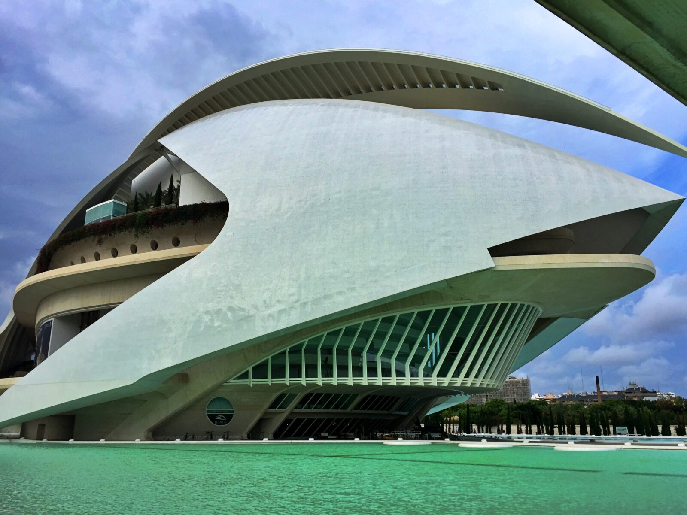
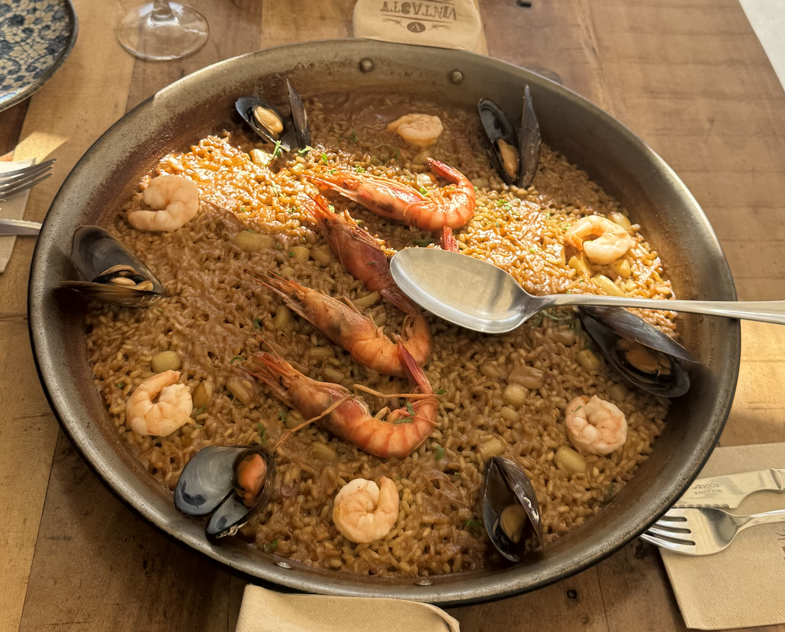
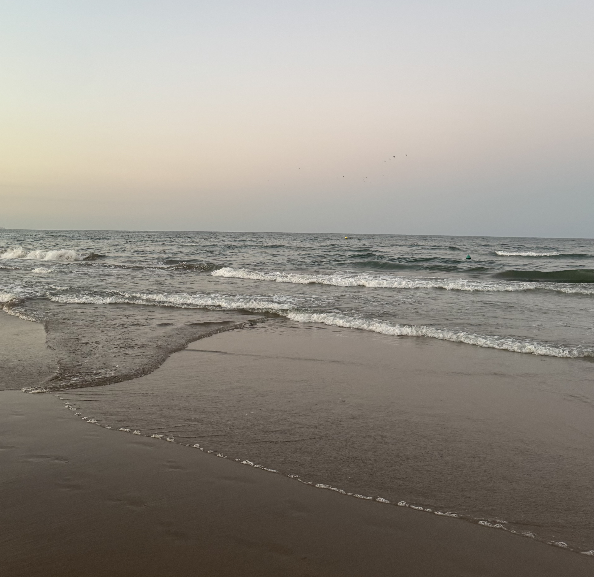

Dlaczego akurat Walencja?
Walencja to super miasto w Hiszpanii, które leży prosto nad Morzem Śródziemnym. Jest bardzo popularne, bo łączy w sobie stare, historyczne budynki z nowoczesną architekturą. Każdy znajdzie tu coś dla siebie – od zwiedzania po leżenie na plaży.

Nowoczesne miasto nauki
Najbardziej znanym miejscem jest tutaj wielki kompleks nowoczesnych budynków, który wygląda jak z przyszłości. Znajduje się tam ogromne oceanarium z rybami oraz muzeum nauki. Warto to zobaczyć na własne oczy.

Autentyczna Paella Valenciana
Mało kto wie, ale słynne hiszpańskie danie z ryżem, czyli paella, powstało właśnie w rolniczych okolicach Walencji jako proste danie tamtejszych chłopów. Sama nazwa potrawy pochodzi od specjalnej, dużej i płaskiej patelni z dwoma uchwytami, w której jest przygotowywana.
Tradycyjna, prawdziwa wersja z tego regionu (Paella Valenciana) nie zawiera owoców morza. Robi się ją tutaj wyłącznie z mięsem kurczaka i królika, a także z dodatkiem specjalnych odmian lokalnej fasoli, ślimaków oraz świeżego rozmarynu. Kluczowym składnikiem jest szafran, który nadaje potrawie piękny, złocisty kolor.
Największym przysmakiem dla znawców kuchni jest tzw. socarrat – czyli celowo przypieczona, chrupiąca warstwa ryżu, która tworzy się na samym dnie patelni. Paella wygląda super, niesamowicie pachnie i podczas wizyty w Walencji po prostu trzeba jej spróbować!

Szeroka i spokojna Plaża de la Patacona
Jeśli szukasz idealnego miejsca na relaks i ucieczkę od miejskiego zgiełku Walencji, Playa de la Patacona to absolutny strzał w dziesiątkę. Stanowi ona naturalne, północne przedłużenie niezwykle popularnej, ale często zatłoczonej plaży miejskiej Malvarrosa.
Patacona słynie z ogromnej przestrzeni, bardzo drobnego, miękkiego i jasnego piasku oraz wyjątkowo czystej, spokojnej wody Morza Śródziemnego. Ponieważ znajduje się nieco dalej od ścisłego centrum turystycznego, panuje tutaj znacznie bardziej kameralna atmosfera, a na brzegu można spotkać głównie lokalnych mieszkańców odpoczywających po pracy.
To idealne miejsce zarówno na całodniowe opalanie, jak i na długie, relaksujące spacery o zachodzie słońca. Wzdłuż całej linii brzegowej ciągnie się szeroka, tętniąca życiem promenada, przy której zlokalizowanych jest mnóstwo uroczych kawiarni, pastelowych knajpek oraz tradycyjnych restauracji.
Podczas wizyty w tej okolicy wręcz obowiązkowym punktem jest spróbowanie lokalnych hiszpańskich przysmaków oraz autentycznej, cudownie orzeźwiającej horchaty – słynnego napoju z migdałów ziemnych, z którego produkcji słynie sąsiadujące bezpośrednio z plażą miasteczko Alboraya.
